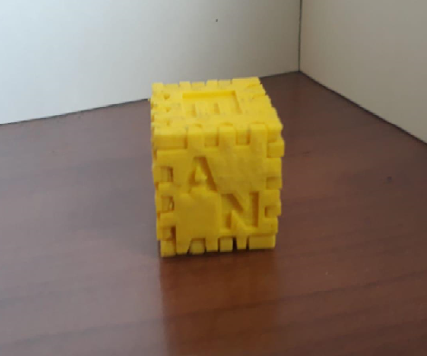
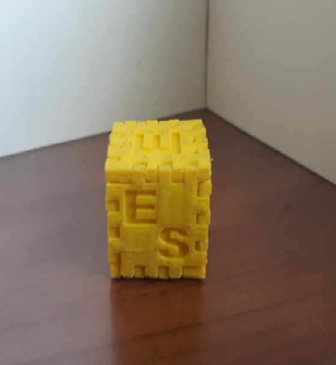
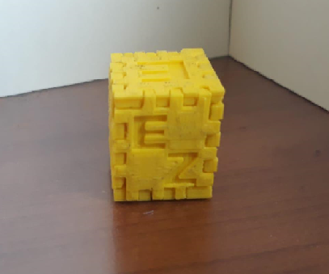
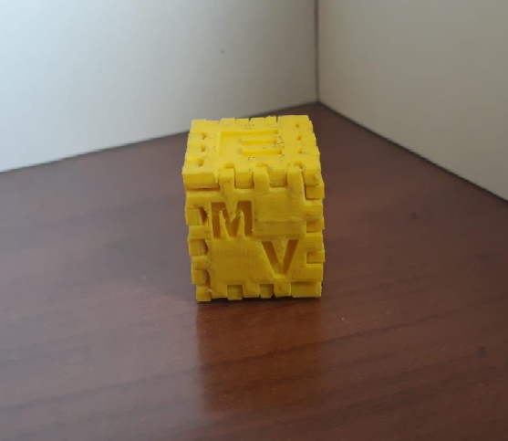
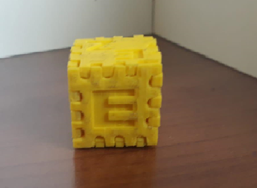
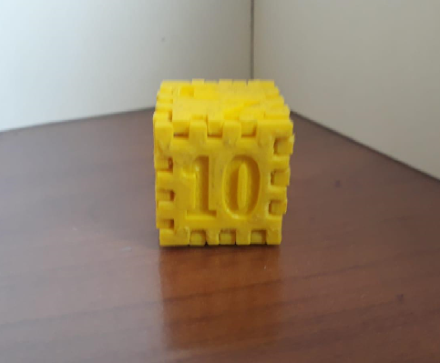

Izgatavošanas vēsture
Šo 3D izprintēto kubiņu izgatavoja komanda, kuras sastāvā ir 4 skolēni(vēlāk būs norādīta tabula ar viņu vārdiem). Lai izgatavotu kubu. ākumā izmantojām 3D konstruēšanas programmu tinkercad.com, kur ir iespējams pievienot vairākus cilvēkus kuba izveidei. Izdomājām, ka uz 2 šķautnēm(augšējās un apakšējās)uzrakstīsim mūsu klases nosaukumu 10. - augšējā un E - apakšējā. Pārējas 4 šķautnes izmantojam savu vārdu uzrakstīšanai(es paņemu 2 burtus A un N, tāpēc Andrejs Nazarovs-Gončars ne visi burti tika iekļauti). Tad saglābājām kubu .STL formātā un sākām printēšanu. Kubs tikko izgatavots apmēram marta sākumā, tomēr šis process nebija tik viegls. Mēģinājām un pārtasījām kubu vairākas reizes - sākumā bija pārāk biezs un nebija iespējams savienot tā šķautnes. Vēlāk kuba aizpilde bija maza, tāpēc uzreiz salūza. Galu galā esam nonākuši pie ideālas temperatūras - 220C un aizpildes koeficienta - 75%.
Kad kubs bija izprintēts, mēs sākam to apdari ar smilšpapīru. Jo bez tās nebija iespējams savienot kopā visas šķautnes. Esam izmantojuši MakerBot PLA šķiedru(dzeltenā krāsa), kura ir labākā izvēle saistībā MakerBot Replicator Mini 3D printeru.
Īss apraksts un darba gaita
Šeit būs norādītas visas darbības, kuras veicam saistībā ar kubu un to izgatavošanu:
- Februāra sākums - kad mūs sadalīja grupās, mēs nolēmam izveidot whatsApp grupu
- februāra sākums - sākām kopīgu kuba konstruēšanu tinkercad vidē
- febrāra vidus - sadalījām visus darba uzdevumus, nolēmam, kurš veidos 2 šķautnes ar klases nosaukumu
- februāra beigas - pabeidzām kuba veidošanu tinkercadā, saglabājām to .STL formātā
- no marta sākuma līdz aprīļa beigam - mēs neveicam nekādas darbības :))
- maija sākums - katrs komandas dalībnieks sāka veidot savu weblapu
- 11.maijs - weblapas par kubu nodošana
Darbagaitas video
Links, kā notiek printēšanaKomandas dalībnieki
| 1. | Andrejs Nazarovs-Gončars |
| 2. | Eduards Zeļenkovs |
| 3. | Ekaterina Sarajeva |
| 4. | Marta Elizabete Vītola |
Darba sadalījums
| Andrejs Nazarovs-Gončars | Sava škautne kubam un klases šķautnes veidošana |
| Eduards Zeļenkovs | Sava škautne kubam un projektēšana papīrformātā |
| Ekaterina Sarajeva | Sava škautne kubam un projektēšana tinkercadā |
| Marta Elizabete Vītola | Sava škautne kubam un projektēšana tinkercadā |
3D printeris
MakerBot Replicator Mini+ ir viens no jaunākājiem un labākajiem 3D printeriem. Skolas prinetrim ir arī Smart Extruder+, kā arī visi citi papildinājumi, piemēram, video-kamēra, iespēja pieslēgties printerim ar Wi-Fi palīdzību un USB kabeli. Pēc makerbot.com datiem MakerBot Replicator Mini+ printē par 10% ātrāk nekā viņa pēcnācējs. Kā arī aizpildes blīvums ir par 28%.
MakerBot Replicator Mini+Kuba fotogrāfijas
Ar maniem, kā arī citu komandas dalībnieku iniciāļiem
Mana šķautne(Andrejs Nazarovs-Gončars)
Ekaterinas Sarajevas šķautne
Eduarda Zeļenkova šķautne
Martas Elizabetes Vītolas šķautne
E burts apakšējā šķautnē
Viens no 10.klases iniciāļiem